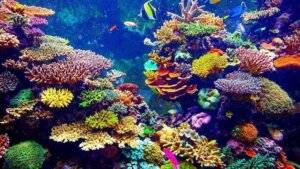
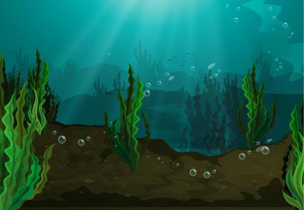
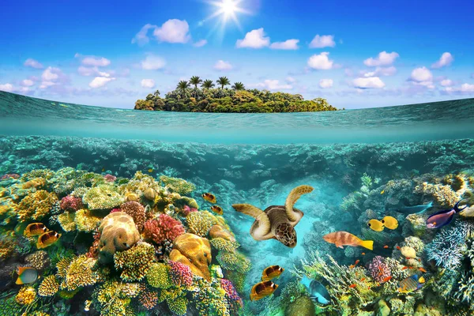

Arrecifes de coral: se encuentran especialmente alrededor de las islas de San Andrés,
Providencia y Santa Catalina.Los arrecifes de coral son como bosques bajo el mar, llenos de colores
y vida. Están formados por corales, que son pequeños animales que viven juntos y crean grandes estructuras.
En ellos habitan muchos peces y otras especies marinas, y además ayudan a proteger las costas.
Pastos marinos: Los pastos marinos son plantas que crecen en el fondo del mar, especialmente en la Región
Insular de Colombia, cerca de islas como San Andrés y Providencia. Forman praderas bajo el agua donde
viven muchos animales marinos, como peces, tortugas y caballitos de mar. Además, ayudan a mantener el
agua limpia y protegen las playas. ¡Son muy importantes para la vida del océano!
Ecosistemas marinos tropicales: son lugares del mar con aguas cálidas y llenas de vida.
Allí habitan corales, peces y muchas otras especies que hacen del océano un mundo colorido y especial.
Además, ayudan a cuidar el planeta, dando oxígeno y protegiendo las costas.